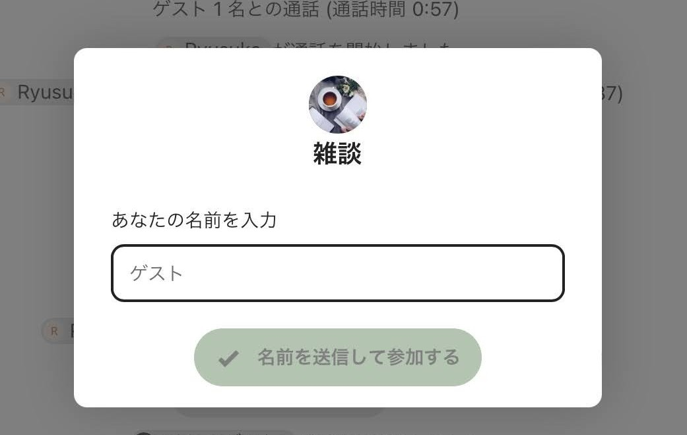
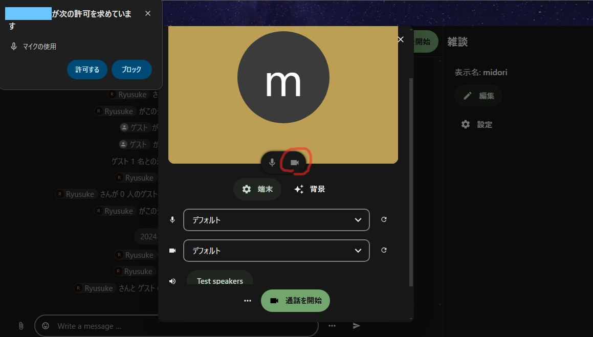

← Lego-kunveno «Venu, legemuloj!»
Kiel ensaluti la ĉambron
Ĉi-sube skribitaj mesaĝoj de la retservo aperos en via lingvo por la retumilo.
- Malfermas la URL-adreson per retumilo.
- Tajpas vian nomon en la breĉon.

- Puŝas la tuj suban butonon “Mi sendas la nomon kaj eniras”.
- Aperas en la supra angulo du dialogaj fenestroj por postuli permesojn uzi mikrofonon kaj kameraon.
Elektas la eblon “Mi permesas” por ambaŭ demandoj.

Se vi ne volas uzi la kameraon, vi klakas ĝian piktogramon (ĉi-supre markita de oranĝa linio) por ĝin malvalidigi.
- Puŝas la verdan butonon en la malsupro.
Jen la fino.
Se vi renkontas problemon, kontaktu min: utaidori@gmail.com
← Lego-kunveno «Venu, legemuloj!»